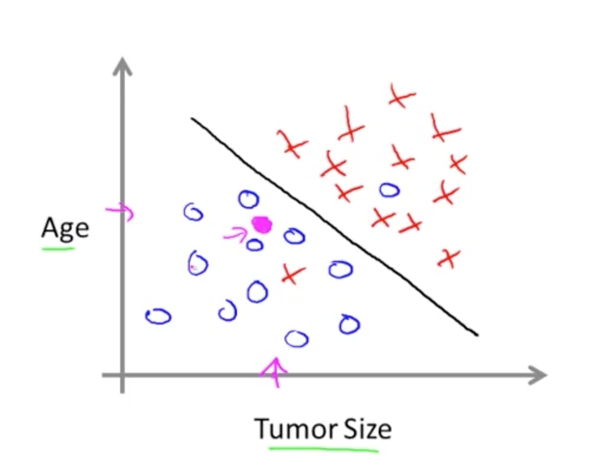
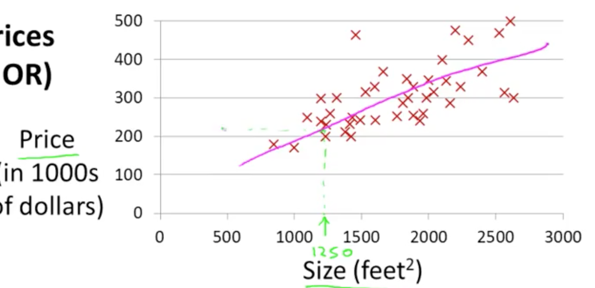
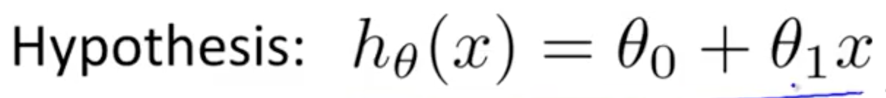
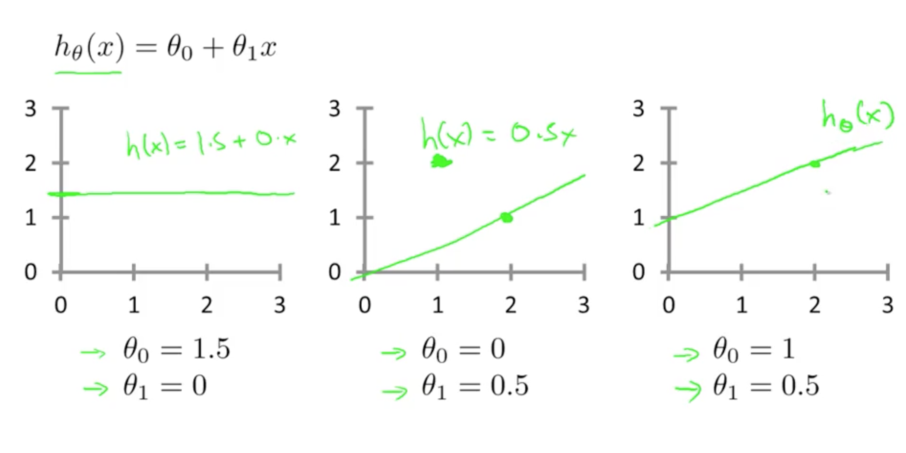
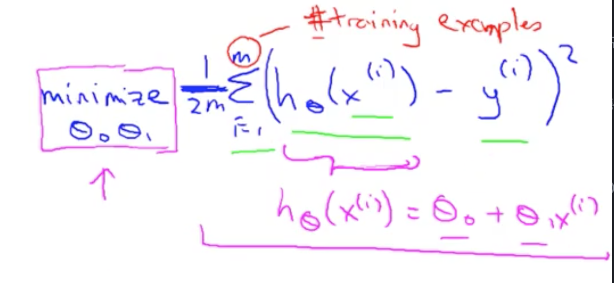
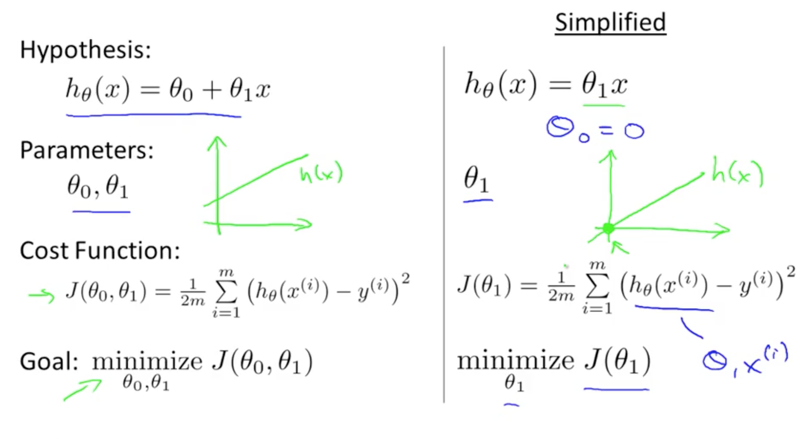
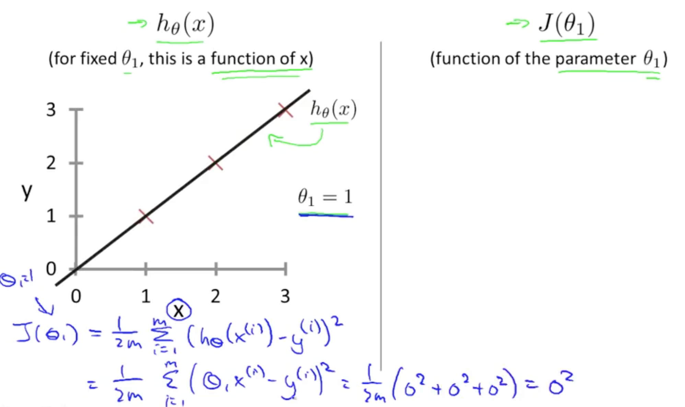
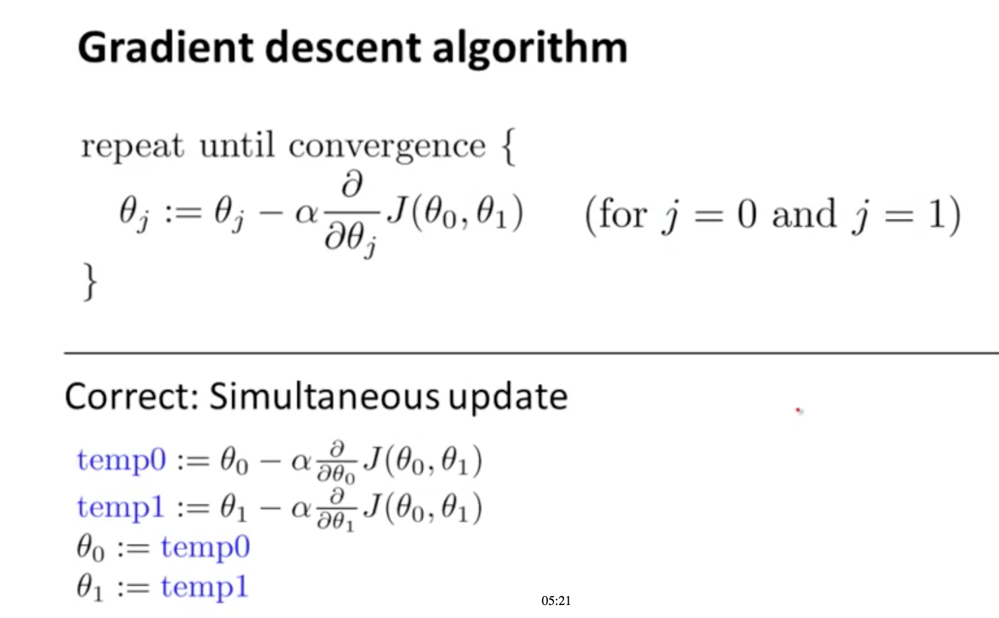

Welcome to machine learning
머신러닝이란? 이미 실생활에 많이 사용되고 있습니다. 구글이나 빙을 통해 검색을 할때 머신러닝 소프트웨어는 어떤순서로 리스팅을 할것인가를 나타냅니다.
Facebook 혹은 Apple의 포토앱에서는 여러분 친구들의 사진을 인식하는데 이또한 머신러닝입니다. 이메일을 읽거나 스팸필터를 사용하는것또한 머신러닝입니다.
컴퓨터가 명시적으로 프로그램되지않아도 알수있도록 하는 분야가 있습니다. 한 예를 보면 저는 로봇이 집을 청소하는 프로젝트를 연구하고있습니다
어떻게 작동을 할까요? 아마도 로봇이 당신이 청소하는것을 보고 그것을 배우는 것입니다. 당신이 어떤 물건을 집는지 보고 어디다가 놓는지를 보고 그와 비슷한것을 당신이 없을때 할것입니다.
이런것들이 저에게 흥미를 일으키는 이유는 바로 이것들이 AI, 혹은 인공지능 문제이기때문입니다
많은 과학자들이 이런것을 머신러닝을 통해 하는것이 최선이라고 생각하는데 이것을 neural networks라고 부릅니다.
즉, 어떻게 사람의 두뇌가 작동하는것인지를 따라하는것이지요. 저는 이런것들을 당신에게 이번 클레스에서 다룰려고합니다
그리고 실제구현하는것도요
Introduction
Supervised Learning
이 비디오에서 가장 일반적인 머신러닝 문제에 대해 다뤄볼것입니다. 그것은 Supervised Learning(지도학습)입니다.
지도학습을 더 일반적으로 정의하자면 예제로 설명하는게 최선입니다. 그 후에 formal definition을 알아보죠.
집 가격을 에측하고자할대 데이터를 먼저 모아야합니다. 데이터가 이렇다고 해보죠. x축은 집 크기를 square feet으로 나타내고, y축은 집값을 1000$ 단위로 나타냅니다 이 데이터에서 750 square feet을 소유하는
친구가 있다고 하고 집을 팔려고한다고 합시다. 그러면 얼마나 돈을 받을수 있을까요? 알고리즘을 배우는것이 어떻게 도움을 줄까요?
아마도 이런 일직선을 데이터상에 그리는것일겁니다. 혹은 일직선을 데이터상에 맞춰가는것이지요.
아마도 집을 $150,000에 팔수 잇을것같네요. 이것이 러닝 알고리즘의 전부는 아닙니다. 아마 더 좋은 방법이 있겠죠
예를 들어 일직선을 데이터상에 보내는것대신 quadratic function을 쓰거나 second-order polynomial을 보내는것이 더 낫다는것입니다.
그리고 그것을 이용하여 예측을 하면 집을 $200,000에 가깝게 팔수있다는것을 알수있습니다.
우리가 말하고자하는것은 어떻게 선택하고 어떻게 결정하는가입니다. 일직선을 그리는것일수도 있고 혹은 quadratic function을 데이터에 그리는것이지요 그리고 fair picking 방법은 없습니다.
하지만 이런것들이 알고리즘을 배우는것에 좋은 예제는 될수있죠. 바로 이것이 Supervised Learning algorithm입니다.
Supervised Learning이라는 용어는, we gave the algorithm a data set in which the 'right answer' were given.(올바른 답변이 있는 데이터셋을 알고리즘에게 주는것)
즉, 예제를 통해서 집값에 대한 데이터셋을 주었고,( 올바른 가격이 얼마인지 무엇이 실제 가격인지), 새 집에 대한 올바른 가격을 내는 알고리즘을 toss하는것 입니다. 조금 더 전문적으로 말하면, 'regression problem' 으로 불립니다.
regression problem 을 통해 연속적인값(continuous value) 을 예측할수 있다.
즉, 집값을 구햇듯이요. 기술적으로 가격은 반올림되어 가장가까운 cent가 될수 있고, 그래서 실제로는 discrete값일것입니다.
하지만 우리는 집값을 real number, scalar value, continuous value number 그리고 term regression 으로 생각을 한다. 연속적인 값들을 예측한.
다른 supervised learning 예를 들어보면, 몇몇의 친구들과 내가 연구했던것인데 암을 예상하는것이지요
의료기록을 보고, 그리고 유방암이 악성인지 양성인지를 예상해봅시다.
누군가가 종양이나 덩어리를 가슴에서 발견합니다. 발견하고 악성 종양은 유해한것이고 유험한것입니다. 양성은 무해한것입니다. 그래서 사람들은 이것을 매우 중요하게 생각하죠.
자료를 봅시다. 수평축은 종양의 사이즈고 수직축은 one / zero, 즉 yes no 로 할것입니다.이를 악성인지 양성인지로 나타낼거구요
이거 이거는 악성입니다....
5개의 악성과 5개의 양성 예제를 가지고 있습니다.
우리친구가 유방종양을 갖고 있고 그 종양의사이즈가 이쯤에 위치한다고 칩시다
여기서 머신러닝 문제는 그 종양이 악성인가 양성인가의 개연성(probability)을 예상하는것입니다.
전문적으로 말하면 classfication problem이라고 말할수있습니다 (분류하는것이구나)
classification 의 뜻은 값을 discrete로 예상할수 있는가 하는것입니다 : Zero or one. 악성 or 양성
이 분류는 두게 이상일수도 있습니다.
예를들어 3가지라고하면 zero, one, two 혹은 three일수 있습니다. zero는 no cancer, one은 type one cancer 처럼 3가지의 암종류를 나타낼수 있죠.
이 또한 classification problem이라혹 할수있습니다. 왜냐하면 이 discrete value set이 no cancer, cancer type one, type two type 3로
매칭이 되기 있기때문이죠. 이 classification problem에서 이 자료를 나타내는 다른 방법이 있습니다.
약간 다른 심볼을 이용하여 이 자료를 나타낼것입니다.
종양의 사이즈가 악성인가 양성인가를 나타내는 성질이 된다면, 이 데이터를 이렇게 그릴수 있습니다. 다른 심볼을 이용하여 악성/ 양성을 나타낼것입니다.
crosses로 그리는 대신에 O를 악성으로그릴것입니다. 이렇게요. 그리고 X는 양성을 유지할것입니다.
자료들을 위에 그렸고 그것들을 매핑하여 아래에 나타냈습니다. 다른 심볼들을 이용해보죠 circle과 crosses들을 악성과 양성을 타나내는것으로요
지금 이 예제에서는 하나의 feature와 하나의 attribute를 이용하였습니다. 즉, 종양사이즈를 악성인지 양성인지 예측하기위해 사용하였습니다.
다른 머신러닝문제에서 하나이상의 feature와 attribute를 나타내는 경우가 있다.
여기 예제에서 종양사이즈만을 아는대신에 우리는 부모의 나이와 종양사이즈를 안다고 해보죠. 이런경우 여러분의 데이터셋은
이렇게 보일것입니다. 나이가 있는 부모집합과 종양사이즈 그리고 이렇게 보일것입니다. 다른 부모셋들은 이렇게 보이구요
악성으로 나타낼것입니다. cross로.
친구중한명이 종양을 갖고 있고. 종양크기와 나이는 이쪽에 매칭되고 매칭되는 자료는 여기에.
Learning algorithm은 data 사이에 악성과 양성을 분리하는 직선을 그리는것입니다. 그래서 learning algorithm은 classes of tumor를 분류하는것처럼 직선을 그리는것입니다. 그래서 양성에 더 가깝다는것을 예측할수 있습니다.

이 예제에서는 두 features를 봤습니다. 부모의 나이와 종양의 사이즈를. 머신러닝문제에서는 우리는 여러 더 많은 features를 갖게되는경우가 종종있습니다. 그리고 제 친구중하나가 그쪽에 일한다.
그들은 clump thickness, the clump thickness of breast tumor를 이용합니다. Uniformity of cell shape of tumor와 같은 특징들 또한 이용합니다.
이 클레스에서는 이것들을 어떻게 다루는가를 보게될것입니다. 무한의 feature들을 다룰수도 있습니다.
이 슬라이드에서는 5개의 features를 보여드렸습니다. 두개의 축과 3개 이상은 여기. 하지만 대신에 무한의 feature를 이용하고
무한의 attributes 를 이용하고 . 어떻게 무한을 다루게 될것인지. 어떻게 무한의 숫자를 저장할것인지. 메모리가 run out of memory되었을때 어떻게 다룰것인지.
이런것을 Support Vector Machine이라는 알고리즘을 배울때 알게될것입니다. 수학적으로 깔끔한 방법을 통해 infinite number of features를 컴퓨터가 이런것을 다루도록할것입니다.
상상해보십시요 제가 무한의 리스트를 여기 그렸다면? 하루종일 그리고만 있을거다. 이것들을 다루는 알고리즘을 come up할것이다.
정리하자면 이 class에서는 'Supervised learning'에 대해 이야기할것이다. 그 아이디어는, supervised learning, 그리고 데이터셋 예제를 통해서, "Correct answer"가 무엇인지를 알게될것이다. (집값이나 악성/양성)
또한 'regression problem'에 대해서도 이야기했었는데, Regression problem의 뜻은 연속적인 값을 예상하는것이였다. 그리고 classification problem은 discrete value를 예상하는것이였다.
회사에서 두 문제를 푸는 알고리즘을 개발해야한다. 첫번째, 같은 물건들의 inventory를 갖고 있고
3달동안 얼마나 팔것인가를 예층하는것이다.
두번째 문제는 고객계좌들을 테스트할것이다. 계좌가 hacked 되ㅓ었는지 compromised되었는지를 결정하는.
이것들이 classification problem, regression problem 중 어떤것일까?
첫번째 문제는 continuous한 값을 예상하는것이였고 두번째 문제는 0-not hacked, 1-hacked로 결정하는것이였다
정리
Supervised Learning
Supervised learning 문제는 2가지로 분류될수 있다. "regression", "classification" 문제로. "Regression" 문제에서는 continuous한 결과를 예상하고, classification 문제에서는 discrete한 결과를 예상할수있다.
Unsupervised Learning
이 비디오에서는 머신러닝의 두번째 주요 타입인 Unsupervised Learning(자율학습)에 대해 배울것이다.
지난 시간에 Supervised Learning에 대해 배웠었죠 자료의 형태가 Positive 혹은 Negative로 나눠지는 형태였습니다.
Supervised Learning의 예제에서는 우리는 확실히 올바른 정답이 무엇인지 말할수 있었습니다. 예를들어 악성인지 양성인지.
Unsupervised Learning에서는 자료의 형태가 레벨이 없는 것이거나, 같은 레벨이거나, 혹은 레벨이 전혀 없는것도 있습니다.
여기서 우리는 자료를 제공받은후 무엇을 해야하는지 알지 못할수도 있습니다. 또한 데이터가 무엇을 의미하는지도 모를수도 있습니다.
대신에 그저 자료만 주어질뿐입니다. 당신은 데이터에서 어떤 구조를 파악할수 있겠습니까? 주어진 data set에서 Unsupervised Learning algorithm은 두가지 cluster가 존재하는 것을 정할것입니다.
여기에 하나, 그리고 저기에 하나. 그리고 맞습니다. Supervised Learning은 이 데이터를 두 클러스터로 분리를 할려고합니다. 이를 Clustered Algorithm이라고 하고 많은 분야에 사용되고 있습니다. 한가지 예로 구글뉴스를 보면 많은 뉴스들이 Cohesive news group으로 분류되고있음을 알수있습니다.
즉 구글뉴스가 하는것은 많은 뉴스들을 자동으로 Cluster되도록 하는것입니다.
여기 유전학에 대한 예제가 있습니다. DNA Microarray data. 아이디어는 각각을 그룹으로 만드는 것입니다. 그들이 어떻게 하는지 어떤것을 가지고 있는지를, 혹은 특별한 유전자를 갖고 있는지로.
이 색깔들은 각각이 특정 유전자를 갖고 있는지를 표시합니다.
그래서 당신이 해야할것은 Clustering algorithm을 통해서 카테고리화 하거나 다른 타입의 사람으로 분류하는것입니다.
이것을 Unsupervised Learning 이라고 하는데 이전에 이 형태 사람은 type1, 이 사람은 type2 인지를 말해주지 않았기 때문입니다. 대신 우리가 말했던것은 여기에 데이터뭉치들이 존재한다는것뿐입니다. 저는 이 데이터가 뭔지도 모르고 어떤 타입이 존재하는지도 모릅니다. 하지만 당신은 자동으로 구조를 찾고 , 이전에 알지 못했던 형태로 자동으로 Cluster할것입니다. 왜냐면 정답을 알려주지않았기 때문에 이것을 Unsupervised learning 이라고 합니다
3:44
Unsupervised learning or Clustering은 많은 응용분야에 쓰입니다. 친구가 연구하는 분야는 데이터 센터에서 어떤 기계가 함께 일할려고하는지. 그리고 같이 일을 하게 만든다면 더 효율적으로 일할수 있는지에 대해 연구합니다.
두번째 응용은 소셜네트워크입니다.
세번째로 자동으로 시장 세그먼트들을 만드어서 더 효율적으로 판매할수있도록 하는것입니다. 이런것을 Unsupervised Learning이라고 하는데 우리가 클러스터 데이터를 알고는 있지만, 마켓 세그먼트가 어떻게되는지, 누가 마켓세그먼트1번에 있는지 누가 마켓세그먼트2인지는 미리 알지 못했기 때문입니다. 우리는 알고리즘을 통해 이것을 알게할것임
또한 Unsupervised learning 은 놀랍게도 천문학 데이터분석에 이용이됩니다. 어떻게 은하가 생겨나는지 에 대한 놀라운 이론을 발견하게합니다. 다른 예제로 칵테일 파티 문제가 있습니다.
칵테일파티는 사람이 너무 많아 바로 앞에 있는 사람의 목소리도 들을수가 없습니다. 두 사람이 동시에 말을 하게됩니다. 마이크 두게를 놓게되면 서로다른 조합의 목소리가 녹음이 됩니다. 왜냐면 거리가 각각 마이크까지 거리가 다르기 때문이죠
마이크1은 사람1의 목소리를 크게 녹음할것입니다. 더 가깝기 때문이죠. 하지만 어쨋든 두 사람의 목소리의 조합을 녹음하게 됩니다.
이렇게 실제녹음된것을 Unsupervised learning algorithm인 cocktail party알고리즘에 적용합니다. 두 녹음 을 듣고, 구조를 파악하는것입니다. 이 녹음을 듣고, 두 게의 녹음이 합쳐진거라는것을 알고, 더해졌다는것을 알고, 두게의 소스로 나누는것까지 하는것이다.
어떻게 이렇게 복잡한것이 구현되었는지 보았습니다. 이 오디오 처리를 위해 엄청난 코딩을 해야할것처럼 보이고, 오디오프로세싱을 위해 엄청난 자바라이브러리를 이용해야할것같지만, 단 한줄의 코드로 작성할수 있습니다.
이게 쉽다고는 말할수 없지만, 옳은 프로그래밍 환경을 이용한다면 많은 learning algorithm은 정말 짧게 작성될수있다.
Octave programming environment를 사용하는 이유이다.
실리콘벨리에서도 Octave를 통해 prototype을 작성한다. 매우 빠르게 작성할수 있기때문이다.
Octave가 C++이나 Java보다 훨신 쉽게 작성할수 있다. 사실 실리콘벨리에서도 당신이 할일은 Octave로 작성된것을 C++이나 java로 마이그레이션하는 일일것이다.
trust me on this라고 말하고 싶다.
review 문제를 낼것인데 Supervised Learning인지 Unsupervised Learning인지를 풀어봐라
예를들어 이메일에서 스팸을 분리할때 스팸이라는 레이블이 붙어있다면 이것을 Supervised Learning이라고 할것이다.
Supervised Learning이란?
자료의 분리도 안되있고 레이블도 없고 그저 자료만 주어졌을때 Cluster를 분리해내는 것.
Linear Regression with One Variable
Linear regression은 input value에 대한 real-valued output을 예측한다. 집값 예상에 대해 Linear regression을 적용해보고
cost function에 대한 표기법을 나타낼것이다. 그리고 gradient descent method에 대해 소개할것입니다.
Model representation
첫번째 Learning algorithm은 Linear regression입니다. (Regression은 Superivsed Learning에서 continuous한 결과를 예상하는것이다.)
이 비디오에서는 모델이 어떻게 보여지는지 그리고 Supervised learning이 전체적인 progression에 대해 알아볼것이다.
집 값을 예측하는 예제를 이용합시다. Portland의 짒값 데이터를 이용할것입니다. 저는 다양한 가격에 팔린 많은 집들에 대한 데이터셋을 이용할것입니다.
이 데이터에서 여러분의 친구가 집을 팔고 싶다고 가정합시다. 친구의 집은 1250squre feet이고, 당신은 이 집이 얼마에 팔릴것인가를 말해주고 싶을것입니다.
당신이 할수 있는것중 하나는 fit the model이다. 아마 직선을 모델에 적용 하는것이다.

이를 기반으로 친구에게 220,000에 팔수 있다고 말하는것이다. 이게 Supervised Learning의 예이다. 이를 supervised learning이라 할수 있는데 예제에 대한 'right answer'를 주기 때문이다. 즉, 우리는 actual house가 뭔지 정보를 받았고, 데이터셋을 통해 실제로 판매된 집값에 대한 정보를 받았다, 이는 regression problem으로 real-value output(집값)을 예측하는 용어인 regression problem이다.
리마인드하자면, 실제 대부분의 Supervised learning 문제는 classification problem이다. 악성,양성을 구분했던, zero-one으로 구분할수있는(discrete output).
More formally, Supervised Learning에서는, Training set이라고 불리는 data set이 있다. 그래서 집값 문제에서는 집값에 대한 트레이닝셋이 있고, 우리가 할일은 이 것을 통해 집값예측하는 방법을 배우는 것이다.
이 과정에서 사용하는 표기법에 대해 정의를 해보자. 많은 기호들을 이용할것인데 지금 다 알필요는 없다. 하지만 알아두면 코스 진행에 도움이 될것이다.
m을 training example의 수. 즉 예제에서 m은 47
x는 input variable. features라고도 불린다.
y는 output variable. or target variable (which I predict)
(x,y)는 single training example을 나타낸다.
x(i)는 y(i)를 줄것이다. 이를 i번째 trainig set이라고 할것이다.
여기 i는 지수를 나타낸것이 아닙니다. 이 (x(i),y(i))의 i는 training set의 index이고
이 테이블에서 i번째 row를 타나냅니다. 예를들면 x(1)은 첫번째 training 예제의 input value를 나타내고 따라서 2014입니다.
x(2)는 1416입니다. 두번째 x와 y(1)은 460과 같습니다. 첫번째 training 예제에서의 y value는 (1)과 같다.
가끔씩 질문을 날릴것이다 여러게를 선택하는 질문을 날릴것이다. 그래서 여기에 어떻게 Supervised learning이 작동하는지 나와있고.
집값예상알고리즘에 적용할것이다.
learning algorithm의 결과로 나오는 것들은 소문자 h로 나타내는데, hypothesis를 의미한다. hypothesis이 job은,
사이즈값 x를 넣고 가격 y가 나오는것이다. so h is a function that maps x's to y's.
hypothesis가 어떤 의미인지 종종 묻곤하는데 ... 잡담
다음에 어떻게 hypothesis를 나타내는지 알아볼것이다.
Cost Function
이 비디오에서는 cost function에 대해 정의해볼것입니다. 우리가 갖고있는 데이터에서 최적화된 직선을 찾는것을 알게해줄것입니다.
linear regression에서는 이와같은 데이터를 우리가 갖고 있고 이전에 말했다시피 m은 training example의 갯수를 나타냅니다
여기서는 47개. 그리고 이와같은 hypothesis를 갖습니다. (linear이기때문에 1차함수처럼 보임 y=ax+b)

조금 더 전문적으로 말하자면, Θ0, Θ1, they stabilize what I call the parameter.
이 비디오에서 하고자 하는것은 theta zero, theta one의 값을 구하는것이다. 다른 theta zero, theta one을 구하면 우리는 다른 hypothesis를 구하게될것이다.
(당연하다 1차 함수 y=ax+b 꼴에서 a와 b가 다르면 그래프의 모양이 달라진다)

linear regression에서 살펴봅시다. 여기 점을 찍은것처럼 training set이 있고, 우리가 원하는건 theta zero, theta one을 구하는것이다. 그것을 통해 우리는 직선을 얻게 될것이다. 그리고 그 직선은 아마도 데이터들에 잘 들어맞을것이다.
그럼 어떻게 해야 theta zero, theta one을 구할까?
Idea : choose theta zero, theta one. so that h of theta x is close to y for our training example.
아이디어 : theta zero, theta one로 이루어진 직선이 training example들과 가까워야한다. (직선과 traning example 거리 들의 합이 최소여야한다)
우리가 갖고있는 training set에 많은 예제들이 있고,( (x,y) 꼴로) 실제로 팔린 값들이 있다.
x를 바탕으로 실제 y예상값을 구할수 있다. let's formalize this.
여기서 우리가 할려는건 minimization problem을 해결하는것이다. 즉 theta0,theta1을 최소화할것이다.
또 h theta of x -y 의 제곱을 최소화할것이다. (즉 데이터들과 직선 거리를 최소화한다는거다)
자세하게 알아봅시다. i번째 training 예제를 나타내기위해서 x(i),y(i)라고 했었다.
제가 원하는건 training set을 더하는것인데 i=1부터 m까지 더할것이다.
즉 트레이닝셋의 숫자만큼 까지 difference의 squre를 더하는것이다.
계산을 편하게하기위해서 1/2m 을 곱해줄것이다(아마 미적분시에 편하게 할려는 이유일듯. 어차피 최소값을 구하는것이기때문에 1/2m을 곱해줘도 상관이 없다)
이 식이 linear regression에 대한 objective function(cost function)이다.

Training Set
↓
Learning Algorithm
↓
size of hourse -> h -> Estimated price
x (hypothesis) (estimated value)
이 cost function을 Square cost function이라고 부르기도한다. 가장 일반적인 linear regression function이다.
다음 비디오에서는 다른 cost function에 대해 알아볼것이다.
다음비디오에서 cost function J가 무엇을 하는지 더 자세히 알아봅시다.
Cost Function - Intuition 1
이전 비디오에서는 수학적인 의미에서의 cost function의 정의에 대해 알아봤다. 이 비디오에서는 cost function이 무엇을 하는지에 대한 intuition을 알아보고 왜 그것을 사용해야하는지에 대해 알아보자asd
이전시간에 했던것들을 보면, 우리는 직선을 data set에 맞출려고합니다. 이걸 theta 0, theta1을 갖는 hypothesis로 나타냅니다. theta0,theta1이 어떤값인가에 따라
다른 직선이 생깁니다. 그리고 cost function이 있고 optimization objective도 있습니다.(즉 목적은, 세타0,세타1을 최소화한 cost funtion을 만드는것)
이 비디오에서는 cost function을 나타내기위해 simplified된 hypothesis function을 쓸것입니다.
h(x) = theata1*x
(이 simplified된 hypothesis function은 y=ax+b꼴의 직선에서 b, 즉 theta0=0으로 만든것이다.)
theta1을 유일한 파라미터로 갖고 있고, optimization objective 는 J함수의 theta1을 최소화 하는것입니다.
그림에서 의미하는것은 theta 0가 0와 같다면 (0,0)을 지나는 hypothesis function을 선택하게 된다는것이다.

이 simplified된 hypothesizing cost function을 통해 cost function의 컨셉에 대해 더 잘 이해해보자.
2개의 key function이 존재한다. 첫번째는 hypothesis function 그리고 cost function이다.
h(x)는 x에 대한 함수이다. x는 size of house 값이였다. (Model representation 참조)
h(x)는 theta 1이 고정값이다.
cost function, j의 경우. parameter theta1에 대한 함수이다. theta 1은 hypothesis function에서 기울기를 타나낸다.
여기 training set이 있고, 3점(1,1), (2,2), (3,3)이 있습니다. theta 1을 골라봅시다.
theta1= 1일경우 my hypothesis는 이 직선과 같이 보일것입니다 (기울기가 1인 y=x꼴의 직선)
임시로 theta1을 1로 햇는데, theta1 = 1일경우 J(theta1) 함수는 어떻게 될것인가 알아봅시다.
cost function이 어떤값을 갖는지 봅시다. You'll devalue one. As usual, cost function은 이와같이 나타낼것이고..(1/2m * 1부터 m까지의 각 직선과 training set간의 거리의 squre. 그냥 일반적인 cost function이다)
이것은 아래 그림과 같이 정리된다 (simplied했으므로 변수를 제거하면.. )
0의 제곱이 된다.. (아마 합의 공식을 썻을듯)

0이 되는데 왜냐하면 training set (1,1),(2,2),(3,3)에서 theat1이 1이라면 h(x) = y^i가 된다.
(결국 집 사이즈와 집값이 같다는것인가??)
공식에 의하면 J(1)=0이 된다. (위에 J(theta1)은 결국 0의 제곱이였으니)
J(theta1)함수에 대해 알아보자
이 함수는 theta1을 파라미터로 갖는 함수이고, x축은 theta1에 대한 그래프이다. (그림을 봐야겟네)
그래프에 표시를 하면 (1,0)이 된다. (아마 y=0의 그래프가 될것이다.)
theta1이 0.5이면 어떻게 될까요?
theta1이 0.5이면 이와같이되고 (기울기가 0.5인 y=0.5x)
cost function j를 구해볼까? (그러면 cost function의 usual cost function(1/2m..합 구하는 공식) 먼저 그리고, h(x)를 y=0.5x로 치환해서 정리하면되지않을까?)
suqre of the height of line을 구하는것이된다.(y=1x 와의 차이(height)의 squre의 합)
처음은 0.5, 두번째 예제는 (1-2)^2..
이렇게 정리를 하면 0.68가 된다.
예제 하나를 더 보자 theat1 =0이라면 ? (즉 기울기가 0이라는거다, y=x꼴과의 차이를 squre하여 합하면되지않을까?)
다른값들도 이런식으로 하면된다. theta1이 minus이면 기울기가 minus일것이다.
다른값들도 하면 이런꼴의 J(theta1) 그래프가 만들어진다
우리가 하고자하는 optimization objective for a learning algorithm은 theta 1을 선택하는것이다. 그것은 J(theat1)을 최소화하는것이다.
이것이 objective function for linear regression이다.
(아까 말했다시피 이것이 minimized objective이다..)
(즉 cost function을 minimized한게 목적이였고, 그것은 theat1이 1인경우이다. 당연하다 gap이 없으니까)
Cost Function - Intuition 2
이 비디오는 여러분이 contour plots(등고선 방식으로 3d를 나타내는 방법)에 익숙하다고 가정합니다. 이해 못해도 괜찮다.
이전 비디오와는 다르게 theta0, theta1을 유지할것이다(이전비디오에서는 simplied 해서 theat0를 없앴음)
이전 비디오처럼, hypothesis function H와, cost function J에 대해 알아볼것이다.
theta0=50, theta1=0.06으로 나타낸다면 이와 같은 hypothesis를 그릴수 있다. (직선을 그림)
h(x) = 50+0.06x
이전 비디오에서 theta1만 있을때는 이와같은 그래프를 보였다(그림 그림.. cost funtion1에서 그렸던 2차 함수 그래프와 같은. x=1일때 y=0인). 이번에는 theta0, theta1 두게의 파라미터가 있기때문에 조금 더 복잡해질것이다.
(어쨋든 cost function의 x축은 theta1이기때문에 theta1에 대한 함수아닌가?? 하지만 theta0라는 변수가 더해졌기때문에 theat0에 대한 theta1을 그려야할것이다 -> 즉 3차원 그래프를 그려야한다 -> 그래서 contour plots을 쓰는구나)
theta1만 있을때는 bow shape funtion을 그렸다. 이제 2개의 파라미터를 갖는데, 이 역시도 bow shape funtion을 타나낼것이다. training set에 따라서 아래와 같은 cost funtion을 갖게될것이다. 역시 bow shape function이다.
(3차 함수를 그리는 그래프, x축은 theat0, z축은 theat1, y축은 J(theat0,theat1))
TODO: contour plots 그림 붙이기
여기 contour figure에 대한 예제들이 있습니다. 축이 theat0과 theat1만을 나타냅니다. 이 한 타원형은 같은 J(theta0, theta1)의 값을 타나냅니다. (즉 theta0, theta1의 값이 다르더라도 같은 선이라면 같은 J(..,..)함수 값을 갖는다.)
예제 하나를 봅시다. theta0가 800, theta1이 -0.15인 값을.
이것을 hypothesis function에 그려보면 기울기가 -0.15이고 y축이 800인 직선이 그려진다. 지금 이 직선은 데이터와 전혀 맞지않는다.
다른 예제를 봅시다. theta0=360, theta1=0. 이 직선은 h(x)=360+x*0 이된다.
예제 하나 더.. ( close한 직선을 그림)
cost function J에 대해 알아봤고, 어떻게 더 나은 hypothesis가 minimum of the cost funtion이 되는지 알아봤다. 자동으로 theta0, theta1을 찾고, minimize cost funtion J하는 것이 목적이다. 즉 어떻게 자동으로 이 값을 읽고 최적화된 값을 찾는 소프트웨어를 작성하냐이다. (그냥 수학이네)
이후에 더 많은 파라미터가 있을때는 어떻게 하는지 알아볼것이다. visualize하기 힘든경우에 대해서도 알아볼것임. 다음 비디오에서는 theta0, theta1을 자동으로 찾고 minimize cost funtion J하는 알고리즘에 대해 알아볼것입니다
Gradient Descent 기울기하강
이전 비디오에서는 cost funtion J에 대해 정의하였습니다. 이 비디오에서는 minimizing the cost funtion J를 하는 gradient descent에 대해 알아보도록 하겠습니다.
gradient descent는 더 일반적인 알고리즘입니다. linear regression에서만 쓰지 않고 모든 머신러닝에서 쓰입니다. 이 시간이후에 우리는 Gradient Descent를 minimizing cost funtion J이외에도 쓰게 될것입니다. 이 비디오에서는 minimizing 랜덤한 funtion J를 하기위해 Gradient descent를 할것이고. 그 이후에 linear regression에 대한 cost funtion J를 minimizing 하기 위해 쓸것입니다. J(theta0, theta1)이있다고 가정하고 이것을 minimizing 하는것이 목적입니다. 아마도 linear regression의 cost funtion일것입니다.
gradient descent는 다른 general funtion에 적용됩니다. 즉 J(theta0,theta1, theta2, theta3 ...thetaN)이 있고 minimizing theta0, theta1...thetaN을 할때도 쓰입니다. 다만 비디오에서는 간단하게 하기위해 theta0, theta1 두 파라미터만을 이용할것입니다.
우리는 theta0, theta1에 대한 initial guess로 부터 시작을 할것입니다. theta0, theta1을 0으로 시작한후에 이 값을 바꿔가면서 J(theta0,theta1)을 줄여나갈것입니다.
아마도 한방에 찾거나 혹은 local minimum을 찾을것입니다.
그림을 보고 축들은 theta0, theta1으로 되어있고 세로축은 J(theta0,theta1)으로 되어있습니다.
먼저 theta0, theta1 을 어떤점으로 정한다음 한다음에 시작할것입니다. surface의 어떤 점에서 시작하게 될것입니다. 저는 0,0 에서 시작했지만 다른 값으로 시작할수도 있음.
이 그림을 grassy park에서 hole 생각해봐라. 2개의 언덕이 있고(그림에), 당신이 언덕꼭대기에 있다고 생각해봐라. gradient descent에서는 360도 주위를 둘러보고 난후에,
little baby steps을 특정 방향에서 찾고, 가장 빠르게 내려갈수 있는 곳으로 가고 싶을 것이다.
What direction do I need baby steps? 우리는 가장 낮은곳(cost funtion J가 가장 작은곳)에 걸어 갈려고 할때 어떤 방법을 써야할까?? 가까운 곳으로 내려가고 다시 주위를 살피고 또 가까운곳으로 내려가면 가장 빠르게 갈것이다. (take another step). gradient descent는 재미있는 속성이 있는데, 우리가 처음 시작할때 이 점에서 시작을 했었다. 그러면 다른점에서 처음에 시작을 했었다고 상상해보자
이 점에서 step -> step 을 찾아가는 방식으로 진행한다면 second local optimum on right을 줄것이다. (즉 처음 initial point에 따라 값이 달라진다)
사실 실제 optimum은 이쪽이지만, slightly different location에서 시작했다고해서 very different local optimum을 찾게되었다.
이게 gradient descent의 속성이고 나중에 더 이야기하게될것입니다.
수학적으로 봐봅시다. 이게 gradient descent algorithm의 정의입니다.

repeat until convergence 할것이고, 이 식은 theta j를 업데이트할것이다. theta J 에서 alpha 횟수만큼 곱해주는것이다. (현재 위치를 thetaJ의 변화만큼 나눠준다 즉 미분이다)
:= 는 assignment를 타나낸다. alpha는 learning rate를 나타낸다. alpha 는 creating descent할때 얼마나 많은 횟수의 steps를 하는가를 나타낸다. 즉, alpha가 매우크면 very agressive gradient를 타나낸다(가파른), 적으면 가파르지않은(baby) steps를 나타낸다. 두번째는 도함수(미분계수)이다. 하나 더 중요한게 있는데. 우리는 theta0, theat1을 업데이트하기로햇었다(간단하게하기위해 지금은 2개밖에 없음, 0부터 시작해서 minimum optimum을 찾을때까지 한다고햇었다) 그래서 theta J를 0,1 순서대로 업데이트해줌.
여러분은 동시에(simultaneously) theta0, theat1을 업데이트할것이다.
이 식을 구현하기위해서는 right side를 먼저 계산해야한다.
동시에 업데이트하는것이다.
temp0 = ...식 그리고 temp1 = ...식을 동시에 업데이트하고 나서 theat0,theat1에 assign할것이다.
잘못 계산한다면
temp0을 계산하고 theta0에 assign하고 temp1을 계산하고 theta1에 assign하는것이다. 즉, 두번째 temp1을 계산할때 이미 업데이트된 theta0를 쓰고 있다.
왜 simultaneous update를 사용하는지는 지금 설명하지는 않을것이다. 하지만 모두 다 이렇게 쓴다. incorrect한 방법도 아마도 정답을 줄때도 있겠지만 이것은 gradient descent가 아니다.
다음 비디오에서 도함수 부분에 대해 알아볼것임
Gradient Descent Intuation